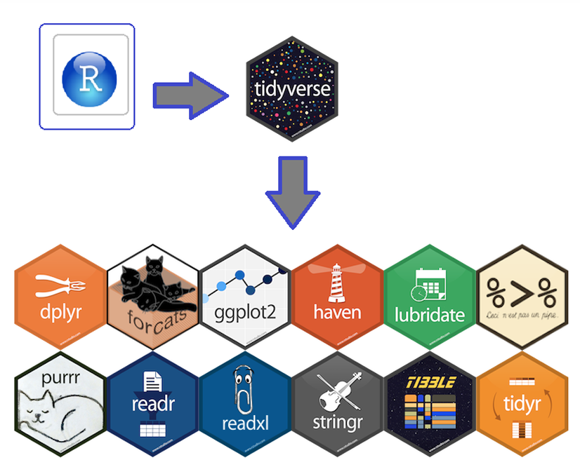

Estadística Inferencial en Rstudio
Lección 1 Conoce Rstudio
1.1 Instalación y Configuración de R-STUDIO
1.1.1 Rstudio en tu equipo (escritorio)
Para comenzar a usar R, el primer paso es instalarlo en tu computadora. R es compatible con casi todas las plataformas, incluyendo los sistemas operativos más comunes. Windows, Mac OS X y Linux. Links de descarga para y RStudio. Nota: Antes de instalar Rstudio, debes instalar R (el motor)
RStudio es un entorno de desarrollo integrado (IDE) disponible para R, el cual tiene un buen editor con resaltado de sintaxis, un visor de objetos de R y un gran número de características agradables que están integradas.Ademas, esta dedicado a la computación estadística y gráficos.
Otra opción: Rstudio en la nube
Puedes utilizar Rstudio en cualquier dispositivo conectado a internet y guardar todos tus archivos en la nube. Encontras todo tal como lo dejaste en cualquier equipo. Recuerda que esta versión tiene un límite de horas de uso mensual. Link de acceso a RStudio Cloud
1.2 Primeros pasos
Rscript
Puede resultar de mucha utilidad trabajar y guardar los comandos usados en un “script” de R. El script es básicamente un documento de texto donde puedes ir escribiendo todos los comandos a ejecutar, es la hoja de ruta que el programa seguirá para analizar tus datos. Considera el hecho de que si se antepone a una línea de comando el signo #, este no será ejecutado y el programa lo considerará como un comentario.

Paquetes o librerías en R
Las librerías en R son colecciones de funciones, datos y documentación que amplían las capacidades del lenguaje base. También se les llama paquetes (packages). Estas librerías permiten a los usuarios realizar análisis de datos, visualización, modelado estadístico, aprendizaje automático, entre otras tareas, sin necesidad de programar todo desde cero.
Ejemplo: “Mundo” Tidyverse en R-Studio

El Tidyverse es una colección de paquetes del R que permiten preparar, procesar y graficar bases de datos. Se destacan los siguientes:
ggplot: permite crear visualizaciones elegantes de los datos de una manera relativamente sencilla.
stringr: permite manipular cadenas de caracteres con el fin de realizar sustituciones, detectar duplicados, analizar patrones, etc.
tidyr: tiene como objetivo obtener datos ordenados. Destacan funciones como
gatherpara crear factores con base en nombres de columnas yseparatepara crear factores separando los caracteres de una columna.readr: permite importar y exportar bases de datos en diferentes formatos y tiene implementada la función
problemsque detecta problemas en nuestras bases.
Para más información visitar la página web:
https://www.tidyverse.org/packages/
Para instalar librerías: Install.pachages(“nombre de la librería”) por primera vez y para llamarla o utilizarla library(nombre de la librería) o en su defecto, require(nombre de la librería)
# Instalar la librería (solo la primera vez)
#install.packages("tidyverse")
# Cargar la librería
library(tidyverse)## ── Attaching core tidyverse packages ──────────────────────── tidyverse 2.0.0 ──
## ✔ dplyr 1.1.4 ✔ readr 2.1.5
## ✔ forcats 1.0.0 ✔ stringr 1.5.1
## ✔ ggplot2 4.0.0 ✔ tibble 3.3.0
## ✔ lubridate 1.9.4 ✔ tidyr 1.3.1
## ✔ purrr 1.0.2
## ── Conflicts ────────────────────────────────────────── tidyverse_conflicts() ──
## ✖ dplyr::filter() masks stats::filter()
## ✖ dplyr::lag() masks stats::lag()
## ℹ Use the conflicted package (<http://conflicted.r-lib.org/>) to force all conflicts to become errors1.2.1 Creación de reportes en R con R Markdown:

R Markdown es un formato de documento que combina código R, texto y visualizaciones en un solo archivo, permitiendo generar informes dinámicos en varios formatos como HTML, PDF y Word. Es ampliamente utilizado en análisis de datos, reportes automatizados y documentación reproducible.
Se basa en el lenguaje Markdown para formatear el texto y en R para ejecutar código dentro del documento.
¿Cómo funciona Rmarkdown?
- En RStudio, ve a File > New File > R Markdown
- Selecciona el formato de salida (HTML, PDF, Word).
- Se generará un archivo con extensión .Rmd.

Un archivo .Rmd tiene tres partes principales:
- Encabezado YAML: Define el título, autor y formato de salida.
- Texto en Markdown: Usa sintaxis Markdown para formatear el contenido.
- Chunks de código R: Secciones de código R que pueden ejecutarse y mostrar resultados.

Si escribes sobre este tipo de ventana, estarás generando solo texto, pero puedes incluir chunks o “trozos” de código a lo largo de todo tu trabajo y crear informes como este que estas leyendo.

Renderizar el documento
- Para generar el documento final, haz clic en “Knit” en RStudio.
- Selecciona el formato de salida (HTML, PDF o Word).
- Se creará un archivo con los resultados y el código ejecutado.

1.3 Conceptos básicos de programación en R:
Si quieres aprender R, primero necesitas entender cómo funcionan los lenguajes de programación en general
Todos los lenguajes (incluyendo R) tienen ciertas bases comunes:
- Variables → Almacenan datos.
- Operadores → Realizan cálculos o comparaciones.
- Estructuras de control → Permiten tomar decisiones y repetir tareas.
- Funciones → Agrupan código reutilizable.
Creación de Objetos
R es un lenguaje orientado a objetos. Los objetos pueden ser usados para guardar valores y pueden madificarse mediante funciones como por ejemplo sumar dos objetos o calcular la media.
## [1] 6R como calculadora
Puedes hacer operaciones matemáticas básicas como +, -, *, /.
- También puedes calcular potencias (^), raíces cuadradas (sqrt()), logaritmos (log()) y funciones trigonométricas (sin(), cos(), tan()).
- print() se usa para mostrar los resultados en la consola.
- Prueba este código en RStudio y verás cómo R funciona como una calculadora avanzada.
## [1] 8## [1] 6## [1] 42## [1] 4## [1] 8## [1] 4## [1] 2## [1] 7.389056## [1] 11.3.1 Tipos de variables en R:
| Tipo | Ejemplo | Descripción |
|---|---|---|
| Numeric | 3.14, -2.5 |
Números con decimales |
| Integer | 10L, -5L |
Números enteros |
| Character | "Hola" |
Texto o cadenas de caracteres |
| Logical | TRUE, FALSE |
Valores lógicos (booleanos) |
| Factor | factor("azul", "rojo") |
Variables categóricas |
| Date | as.Date("2024-02-05") |
Fechas |
| POSIXct | as.POSIXct("2024-02-05 14:30:00") |
Fechas y horas |
## [1] "numeric"## [1] "integer"## [1] "character"## [1] "logical"## [1] "factor"## [1] "azul" "rojo" "verde"# Fechas y Tiempos (Date y POSIXct)
fecha <- as.Date("2024-02-05") # Convertir a fecha
hora <- as.POSIXct("2024-02-05 14:30:00") # Fecha y hora
class(fecha)## [1] "Date"## [1] "POSIXct" "POSIXt"Nota: La función class permite ver qué tipo de variable estamos utilizando
1.3.2 Estructuras de Datos en R:
En R, los datos se pueden organizar en diferentes estructuras según la forma en que se almacena y manipula la información.
| Estructura | Descripción | Ejemplo |
|---|---|---|
| Vector | Secuencia de elementos del mismo tipo | c(1, 2, 3, 4, 5) |
| Matrix | Tabla bidimensional con el mismo tipo de dato | matrix(1:9, nrow = 3, ncol = 3) |
| List | Contiene diferentes tipos de datos | list(nombre = "Ana", edad = 25) |
| Data Frame | Tabla con columnas de diferentes tipos | data.frame(Nombre = c("Ana", "Carlos"), Edad = c(25, 30)) |
| Factor | Variable categórica con niveles | factor(c("rojo", "azul", "verde")) |
| Array | Estructura multidimensional | array(1:8, dim = c(2,2,2)) |
Vectores
## [1] 1 2 3 4 5## [1] "rojo" "azul" "verde"## [1] TRUE FALSE TRUE## [1] "numeric"Factor
# Crear un factor con categorías
colores <- factor(c("rojo", "azul", "verde", "rojo"))
# Ver niveles
levels(colores)## [1] "azul" "rojo" "verde"Matriz
## [,1] [,2] [,3]
## [1,] 1 4 7
## [2,] 2 5 8
## [3,] 3 6 9## [,1] [,2] [,3]
## [1,] 1 4 7
## [2,] 2 5 8
## [3,] 3 6 9Lista
Puede contener diferentes tipos de datos (vectores, matrices, data frames, etc.).
# Crear una lista con diferentes tipos de datos
mi_lista <- list(nombre = "Ana", edad = 25, notas = c(9, 8, 10))
# Mostrar contenido de la lista
print(mi_lista)## $nombre
## [1] "Ana"
##
## $edad
## [1] 25
##
## $notas
## [1] 9 8 10Dataframe
Es una tabla donde cada columna puede tener diferentes tipos de datos.
Es la estructura más utilizada en análisis de datos.
# Crear un data frame
df <- data.frame(Nombre = c("Ana", "Carlos", "Luis"), Edad = c(25, 30, 22), Aprobado = c(TRUE, FALSE, TRUE))
# Mostrar data frame
df## Nombre Edad Aprobado
## 1 Ana 25 TRUE
## 2 Carlos 30 FALSE
## 3 Luis 22 TRUECondicional if-else.
En R, la sintáxis del condicional consiste en:
if (A): evalúa si se cumple la condición A.else if (B): si no se cumple la condición o condiciones anteriores, entonces evalúe si se cumple la condición B.else: si no se cumple ninguna de las condiciones anteriores entonces haga lo siguiente.
Ejemplo:
a<-9
if (a<0){
print("a es negativo")
}else if (a>0){
print("a es positivo")
}else{
print("a es igual a cero")
}## [1] "a es positivo"Bucles for:
Usado para repetir un bloque específico de código, siguiendo una secuencia dada.
## [1] 55Operadores de comparación en R:
# Asignación de valores
a <- 1
b <- 3
# Operaciones y comentarios explicativos
# ¿b es diferente de a?
b != a # TRUE## [1] TRUE## [1] FALSE## [1] FALSE## [1] TRUE## [1] FALSE